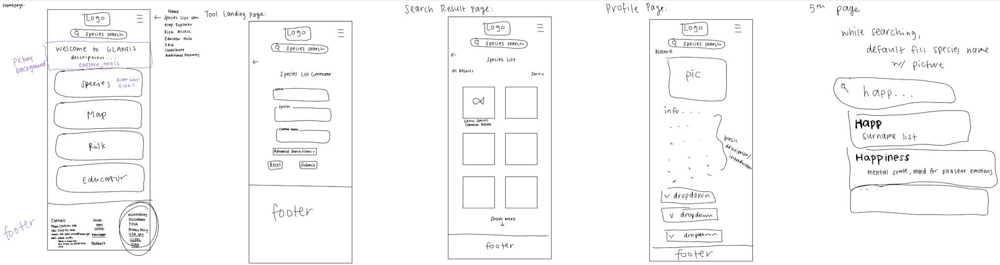

GLANSIS
Client: National Oceanic and Atmospheric Administration (NOAA)
Duration: August 2023-Present
Goal: Redesign the Species List Generator tool on the Great Lakes Aquatic Nonindigenous Species Information System (GLANSIS) website
Tools: Notability, Figma
Target Audiences: Great Lakes Researchers, Natural Resouce Managers, AIS decision-makers, K-16 Educators
Design Process
1. Empathize
2. Define
3. Ideate
4. Prototype
5. Test
6. Assess
User Research (obtained from Dr. Sturtevant at GLANSIS):
Scenario 1: state/federal manager asked to approve permit to import species
• goes to risk assessment clearinghouse
• species level risk assessments explorer
• type in nile tilapia -> makes you also put in full species name
Scenario 2: a local resource manager wants to know what invasive species are in their local management area that they should control
• list generator
• must know HUC code -> average citizen may not know this
Scenario 3: a researcher is planning a project to test a hypothesis about the food web of a particular habitat
Scenario 4: a science teacher needs a lesson for their 8th grade students which is aligned to the next generation science standard on ecosystem -- they would also like an age-appropriate video to accompany their lessons
Scenario 5: 4th grade student has been assigned to write a paper on local invasive species
Brainstorming Sketches
